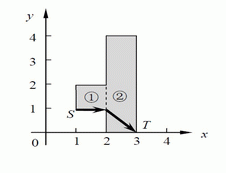

输入的第一行包含一个正整数n，表示组成赛道的矩形个数。
接下来n行描述这些矩形，其中第i行包含4个整数xi,1, yi,1, xi,2, yi,2，表示第i个矩形左下角和右上角坐标分别为(xi,1, yi,1)和(xi,2, yi,2)。
接下来一行包含两个整数xS, yS，表示起点坐标。
接下来一行包含两个整数xT, yT，表示终点坐标。
接下来一行包含一个实数v，表示智能车的速度。
新一届智能车大赛在JL大学开始啦！比赛赛道可以看作是由n个矩形区域拼接而成（如下图所示），每个矩形的边都平行于坐标轴，第i个矩形区域的左下角和右上角坐标分别为(xi,1,yi,1)和(xi,2,yi,2)。
题目保证：xi,1<xi,2=xi+1,1，且yi,1< yi,2，相邻两个矩形一定有重叠在一起的边（如图中虚线所示），智能车可以通过这部分穿梭于矩形区域之间。

选手们需要在最快的时间内让自己设计的智能车从一个给定的起点S点到达一个给定的终点T点，且智能车不能跑出赛道。假定智能车的速度恒为v且转向不消耗任何时间，你能算出最快需要多少时间完成比赛么？
输入的第一行包含一个正整数n，表示组成赛道的矩形个数。
接下来n行描述这些矩形，其中第i行包含4个整数xi,1, yi,1, xi,2, yi,2，表示第i个矩形左下角和右上角坐标分别为(xi,1, yi,1)和(xi,2, yi,2)。
接下来一行包含两个整数xS, yS，表示起点坐标。
接下来一行包含两个整数xT, yT，表示终点坐标。
接下来一行包含一个实数v，表示智能车的速度。
仅输出一个实数，至少精确到小数点后第六位，为智能车完成比赛的最快时间。
对于每个测试点，如果你的输出结果和参考结果相差不超过10^-6，该测试点得满分，否则不得分。
2
1 12 2
203 4
1 1
30
1.0
2.41421356有精度误差，请不要提交
N<=2000,所输入数字为绝对值小于40000的整数